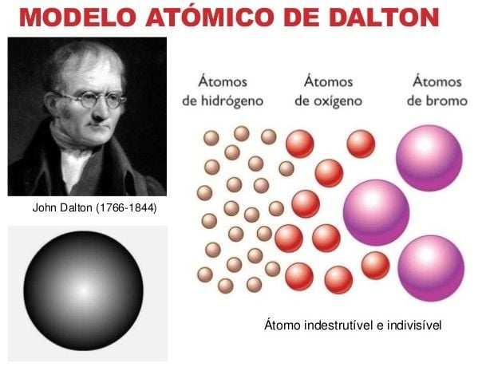
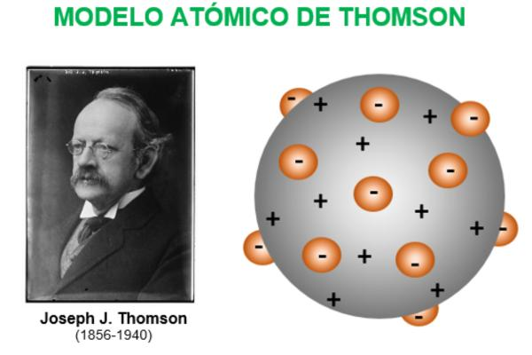
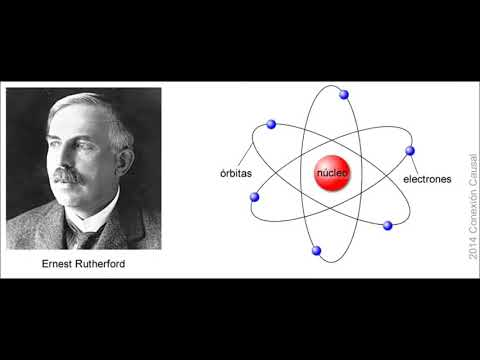
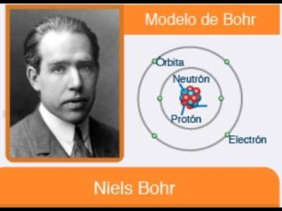
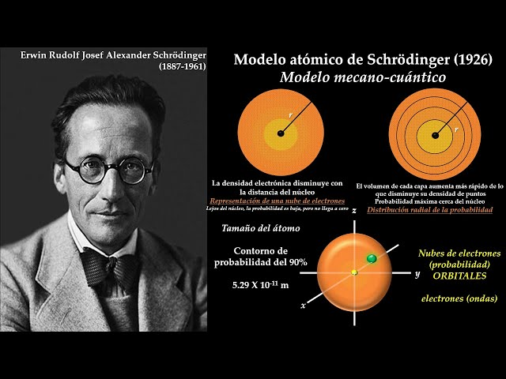

John Dalton propuso que la materia está compuesta por átomos indivisibles y que cada elemento tiene átomos de un tipo único.
J.J. Thomson descubrió el electrón y propuso el modelo del "pudín de pasas", donde los electrones están incrustados en una esfera positiva.
Ernest Rutherford realizó experimentos con partículas alfa y propuso que el átomo tiene un núcleo pequeño y denso rodeado por electrones.
Niels Bohr introdujo la idea de que los electrones orbitan el núcleo en niveles de energía discretos.
El modelo cuántico describe el comportamiento del electrón como una onda y establece probabilidades para encontrar electrones en diferentes regiones.
